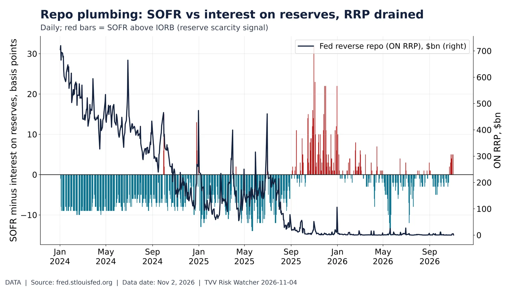
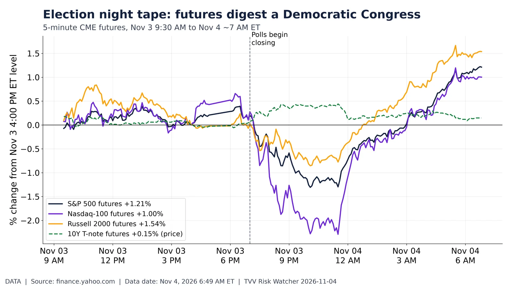

AI chip concentration: does AMD's beat lift the whole complex?. Extended-hours moves of AI chip stocks and SMH after AMD's Nov 3 beat. Yahoo Finance, Nov 4 7:04 AM ET. Source: https://finance.yahoo.com/quote/AMD/
Beveridge curve: September JOLTS openings vs unemployment. Beveridge curve: Sep JOLTS openings 7.52M at 4.2% unemployment. BLS via FRED, released Nov 3, 2026. Source: https://fred.stlouisfed.org/series/JTSJOL

Repo plumbing: SOFR vs interest on reserves, RRP drained. SOFR 3.95% vs IORB 3.90% (+5 bp); ON RRP $0.4bn. NY Fed/FRB via FRED, Nov 2, 2026. Source: https://fred.stlouisfed.org/series/SOFR

Election night tape: futures digest a Democratic Congress. US index and 10Y futures from Nov 3 close to 6:49 AM ET Nov 4 as Democrats won Congress. Yahoo Finance (CME). Source: https://finance.yahoo.com/quote/ES=F/
AI data-center era: electricity CPI outruns inflation. Electricity CPI +43% since Jan 2020 vs all items +30%; trend extrapolation (projection) to Dec 2027. BLS via FRED, Sep 2026. Source: https://fred.stlouisfed.org/series/CUSR0000SEHF01
Copper/gold ratio vs 10-year Treasury yield. Copper/gold ratio 1.591 (x1000) vs 10Y 4.91% (growth gauge vs bond yields). Yahoo (COMEX), FRED, Nov 4, 2026. Source: https://finance.yahoo.com/quote/HG=F/